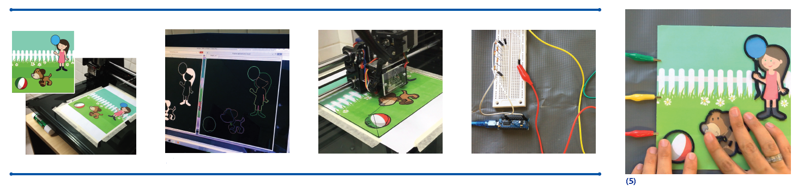
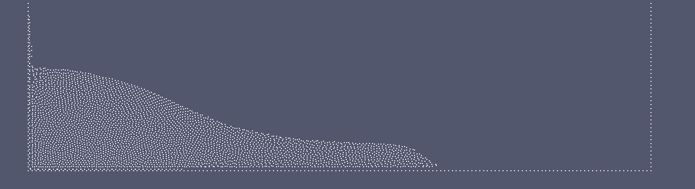

About Me
I am a Master’s student at Voxar Labs, Center of Informatics at Federal University of Pernambuco (UFPE) under the supervision of Prof. Veronica Teichrieb.
I received my Bachelor’s in computer science from UFPE. During my graduation I participated of the Science Without Borders program being able to study one year at Swansea Univerity and do my summer project under the supervision of Dr. Mark Jones and Dr. Chenfeng Li entitled SPH for Visual Applications.
My main research interest are fluid simulation using Smoothed Particle Hydrodynamics method and realistic rendering using shader and ray tracing.
Projects
SPH - 1M particles - Tsunami Simulation
Simulation of a tsunami in a real size (fictitious) city with one million particles running parralel parallel on CPU using OpenMP. The fluid simulation method used was the weakly compressible SPH and ....
Dimensions of the box:
- Width: 84 m
- Length: 120 m
- Height: 53 m
Dimensions of the box:
- Width: 84 m
- Length: 120 m
- Height: 53 m
A Ray Traced Rendering Solution for Particle-Based Fluid Simulation
This graduation work, made under the supervision of Prof. Veronica Teichrieb, aims to investigate the applicability of the SPH to fluid simulation and ways of reconstruct the fluid surface based on a ray tracer algorithm.
Using CUDA technology, a parallel implementation of the Weakly Compressible SPH was made and to reconstruct the fluid surface a ray tracing system named Real Time Ray Tracer was used together with a blur method named Screen Space Curvature Flow.
More details can be found on this here.
More details can be found on this here.
3D SPH
3D dam break simulation using the method in A Qualitative Analysis of Fluid Simulation using a SPH Variation
SPH for Visual Applications
This summer project was done under the supervision of Dr. Mark Jones and Dr. Chenfeng Li and had the goal of implementing a Smoothed Particle Hydrodynamics (SPH) for liquid simulations based in the paper Ghost SPH for Animating Water by Schechter and Bridson.
- Number of Particles: 4100
- Width: 2.4 m
- Height: 0.6m
- Number of Particles: 4100
- Width: 2.4 m
- Height: 0.6m
Publications
Multimodal augmentation of surfaces using conductive 3D printing
Caio Brito, Gutenberg Barros, Walter Correia, Veronica Teichrieb, João Marcelo Teixeira
ACM SIGGRAPH Posters, 2016

We propose a pipeline using computer vision techniques for augmenting existing surfaces through touch and sound. Computer vision is adopted in the content preparation phase, speeding up the assistive content elaboration. Conductive material is deposited over the image and sound feedback is given by mapping printed elements to specific sounds. We show that infant books can be easily transformed into assistive content for visually impaired children using the proposed technology.
A Qualitative Analysis of Fluid Simulation using a SPH Variation
André Silva, Mozart Almeida, Caio Brito, Veronica Teichrieb, José Barbosa, Cesar Salhua
Congresso de Métodos Numéricos em Engenharia, 2015

Fluid simulation using meshless methods has increasingly become a robust way to solve mechanics problems that require dealing with large deformations, in that way, it is briefly shown what the main challenges and advances in the area are. The smoothed particle hydrodynamics (SPH) is then introduced. One of its variations is the Weakly Compressible SPH (WCSPH), which was used as a baseline to implement the method used in this work, called XSPH. Finally, four usual test cases of fluid simulation are analyzed: the lid-driven cavity flow, the dam break, the Poiseuille flow and the elliptic drop. The analysis concluded that the method used in this work performs at least as well as the most reliable and accurate models, and in some aspects performs better.
Towards Automatic Evaluation of Personality Tests
Caio Brito, João Marcelo Teixeira, Veronica Teichrieb
Workshop de Realidade Virtual e Aumentada (WRVA), 2015
Personality testing has become quite popular in job selection in an attempt to predict human behavior and deduce if the person tested has the quali- fication for the job. In Brazil, a commonly used test was introduced by Agostinho Minicucci and it is able to predict personality by the ability of writing vertical traces distributed in lines over time. The measurement of the test results is done manually by a psychologist, which demands a lot of time and work effort. To overcome those problems, a solution is proposed using image processing to measure the results of the test automatically. The solution was validated with 3 psychologists, being able to calculate the productivity of the tested person, the size of each line stroke, the angle of a line stroke, the distance between 2 consecutive strokes, the distance between two lines of strokes, the distance between lines and borders, the direction of a line of strokes and the regularity of the writing. The solution was able to measure with precision most of the variables, except the trace irregularity which had a 76% compatibility with psychologists manual classifications. This was expected due to the fact it is a qualitative analysis that can vary between different psychologists as well.
Operações Paralelas sobre Bases Massivas de Strings
Caio Brito, Lucas Costa, João Marcelo Teixeira, Veronica Teichrieb
Simpósio em Sistemas Computacionais (WSCAD-SSC), 2016
This paper analyzes basic operations commonly used in textual data recovery algorithms in order to benefit from parallel CUDA architecture of NVIDIA. Four different operations were implemented and compared with their implementations in CPU: exact and approximate search strings, characters substitution and frequency calculation. Several tests were carried out varying the size of the database, the size of the requested word and the number of occurrences of the same base. It was possible to obtain a performance improvement in most of the analyzed scenarios. One of the operations was used to search words in the database of the "Diário Oficial da União", and it was possible to get a speedup of 13x when compared with the online CPU solution.
Teaching
Teaching Assistant - Graphical Processing, 2013-2014, link
Last update: 2015-10-08